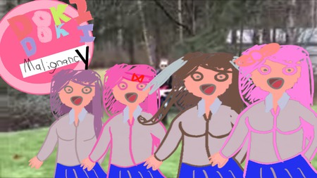

DDLC Malignancy
Nossa equipe Mod (Team BigG Hero 8) trabalhou muito nisso por dois dias inteiros. Este pode ser o primeiro mod já criado no período de 48 horas com uma equipe de mais de 8 pessoas. Como você pode ver, temos novos cenários e espantosidade.
⬇ Download